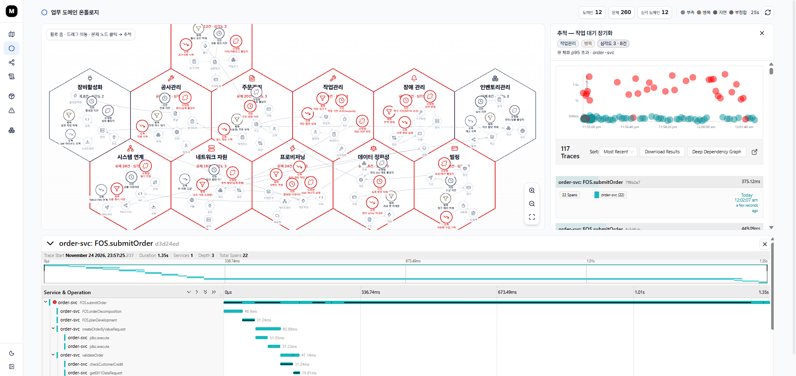
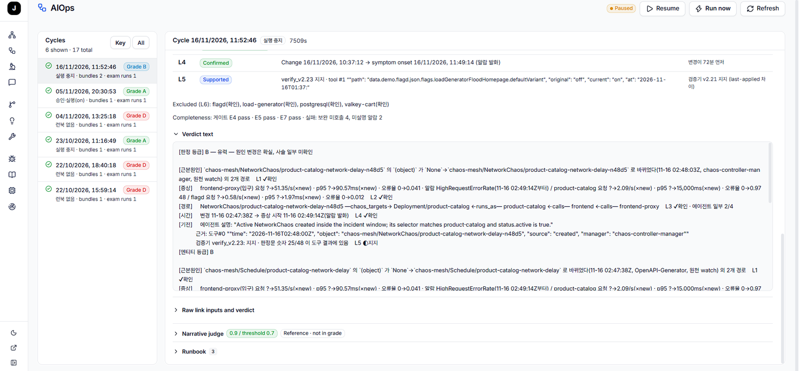
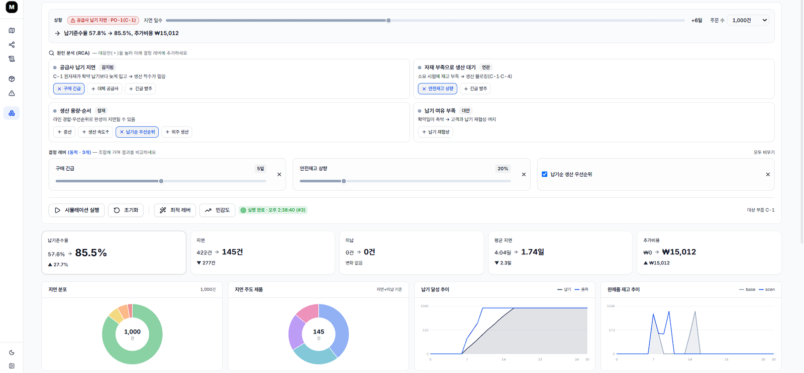

1. 왜 AIOps와 기술 온톨로지를 먼저 하는가
업무 온톨로지는 기술 온톨로지보다 복잡하다. 원인도 더 다양하고, 필요한 조치의 폭도 넓다. 그래서 자연스럽게 이런 질문이 나온다 — "그럼 업무용 온톨로지를 따로, 처음부터 다시 만들어야 하나?"
JuneAI의 대답은 "아니다" 이다. 기술 온톨로지와 업무 온톨로지를 따로 구축할 필요가 없다. 왜냐하면 둘은 결국 같은 종류의 문제 — 병목, 지연, 부족 — 을 풀어내는 같은 과정이기 때문이다.
- 복잡하고 비싼 데이터 플랫폼은 필요 없다. 매번 복잡한 의사결정과 수정이 뒤따르는 무거운 플랫폼을 새로 세울 이유가 없다.
- 필요한 것은 신속하고, 저렴하고, 안정적인 온톨로지와 에이전트이다. 운영 중인 시스템을 그대로 두고, 그 위에 얇게 얹는다.
AIOps·기술 온톨로지는 저렴하고 신속하게 구축하고, 업무 온톨로지에 더 집중한다. 반복된 작업을 줄이고, 비용을 줄이고, 노력을 절약할 수 있다. 남는 예산과 시간을 더 중요한 부분에 집중할 수 있다.
💡 기술을 먼저 다지는 이유는 간단하다. 기술 온톨로지에서 검증된 "문제 인식 → 원인 분석 → 해결책 제시"의 뼈대를, 업무에도 그대로 재사용하기 때문이다. 업무는 그 위에 "무엇을 선택할지"를 더한다.
2. 기술의 문제와 해법은 "제한적"이다 — 그래서 추론이 쉽다
기술 온톨로지와 AIOps가 다루는 문제는 몇 가지로 요약이 된다. 종류가 정해져 있어, AI가 충분히 추론할 수 있는 수준이다.
흔히 겪는 기술 문제
- 성능 저하 · 트래픽 증가 · 처리시간 지연
- 서비스 에러 · 리소스 부족 · 구성 변경
흔히 쓰는 조치
- 스케일 아웃 (서버 늘리기) · 리소스 증설 · 재시작
- 롤백 (이전 버전으로 되돌리기) · 파라미터 변경
문제와 해결책이 모두 정해진 범위 안에 있다. "느려졌다 → 서버를 늘린다", "에러가 났다 → 롤백한다" 처럼, 원인과 처방을 비교적 명확하게 이어 붙일 수 있다. 이것이 기술 온톨로지가 빠르게 자율화될 수 있는 이유이다.
3. 업무는 산업·업무마다 다르다
업무의 세계는 사정이 다르다. 산업과 업무에 따라 겪는 문제도, 그것을 처리하는 방식도 크게 달라진다.
예를 들어 납품 지연, 재고 부족, 가격 변동의 원인을 분석한다고 해보자. 기술의 원인 분석만큼 복잡하지는 않다. 하지만 결정적인 차이가 있다 —
같은 "납품 지연"이라도, 어떤 애플리케이션을 쓰느냐에 따라 호출하는 API와 들여다볼 DB 테이블이 전부 다르다. SAP를 쓰는 곳, TIBCO로 연계하는 곳, 자체 시스템을 쓰는 곳이 모두 제각각이다.
즉, 문제의 성격은 비슷해도, 그 문제를 읽어내는 데이터의 위치와 모양이 산업·업무마다 다르다.
4. 같은 주제, 다른 무대
기술이든 업무든, 결국 마주하는 주제는 병목 · 부족 · 지연 · 변경으로 수렴한다. 그리고 그것을 온톨로지와 에이전트로 원인을 분석하고 해결책을 제시한다는 점도 똑같다.
다만 업무 온톨로지와 에이전트가 처리해야 하는 주제는 훨씬 다양하고, 폭넓고, 표준화가 어렵다. 기술 온톨로지만큼 전문적이고 복잡하지는 않을지언정, 산업과 업무마다 매번 달라지는 동적인 온톨로지·에이전트 구성은 그 자체로 큰 부담이다.
| 구분 | 🖥️ 기술 · AIOps | 🏭 업무 |
|---|---|---|
| 문제의 종류 | 제한적 · 정형화 — 성능·트래픽·지연·에러·부족·구성 | 다양 · 산업별로 상이 — 납품 지연·재고 부족·가격 변동 … |
| 데이터 위치 | 대체로 표준(지표·로그·추적) | 앱마다 API·DB 테이블이 다름 |
| 조치 | 정해진 처방에 가까움 — 스케일 아웃·증설·재시작·롤백·파라미터 | 선택지가 많고, 그중 하나를 "골라야" 한다 |
| 특징 | 범위가 제한적 → 추론·자율화가 쉽다 | 폭넓고 표준화가 어렵다 → 시뮬레이션이 필요 |
| 필요한 것 | 자동 추론 → 자율 조치 | 추론 + 시뮬레이션 → 의사결정 |
5. 그래서 업무에는 "시뮬레이션"이 필요하다
기술은 "느리면 늘린다" 처럼 처방이 거의 정해져 있다. 하지만 업무는 선택지가 여러 개이고, 그중 하나를 골라야 한다. 긴급 발주를 할지, 대체 공급사를 쓸지, 증산을 할지, 납기를 재협상할지 — 각각 비용도 결과도 다르다.
그래서 업무 에이전트와 온톨로지에서는 시뮬레이션이 핵심이다. 사용자의 의사결정이 온톨로지에 어떤 영향을 주는지, 그 변경의 결과가 무엇인지 미리 예측해야 한다. 다양한 옵션 가운데 하나를 고르려면, 먼저 돌려보고(what-if) 결과를 본 다음 결정할 수 있어야 한다.
문제 인식
납품 지연 등 업무 문제를 온톨로지에서 포착
원인 분석
어느 공급·생산 단계가 병목인지 근본 원인 추적
옵션 시뮬레이션
긴급 발주·증산·납기 재협상 등 선택지별 결과 예측
의사결정
결과(납기준수율·비용)를 비교해 가장 나은 안을 선택
🔮 이것이 디지털 트윈의 아이디어이다. 실제 업무 시스템을 건드리지 않고, 온톨로지 위에 가상의 쌍둥이를 만들어 "이렇게 바꾸면 어떻게 될까?"를 안전하게 미리 돌려본다. JuneAI는 SAP 납품 지연 시뮬레이션처럼, 구매와 생산을 연계해 결정의 결과를 숫자로 보여준다.
시뮬레이션이 검증하는 것 — 문제들 사이의 "인과관계"
시뮬레이션의 목적은 단순히 KPI를 예측하는 데 있지 않다. 온톨로지로 연결된 문제들 사이의 인과관계를 검증하는 것이 핵심이다. 하나의 병목이나 지연은 그 자리에 머물지 않는다. 느슨하게 연결된 시스템과 업무를 타고 다른 문제로 번진다.
그래서 JuneAI는 가능한 한 넓은 구간의 프로세스를 하나로 구성하고, 흩어진 문제들을 서로 연관시키며, 그 사이에 인과의 선을 놓는다. 이렇게 엮고 나면 두 가지를 눈으로 확인할 수 있다 —
- 전파 — 특정 문제가 어떤 경로로 다른 문제들로 번지는지. (예: 한 시스템을 성급히 증설했다가 하류가 포화되는 "풍선 효과")
- 해소 — 어느 지점을 바꾸면 연결된 문제들이 함께 풀리는지, 그리고 부작용은 없는지.
🧩 더 나아가, JuneAI 디지털 트윈은 문제들 사이의 인과관계를 온톨로지로 "출력"하고, 그것을 "시뮬레이션"한다. 문제를 하나씩 따로 보는 것이 아니라, 서로 어떻게 엮여 있는지를 그림으로 드러내고, "이 부분을 바꾸면 저기가 어떻게 되는가"를 미리 돌려본 뒤 결정한다. 이 과정에서 문제의 영향도(어디까지 번지는가)와 변경관리(무엇을, 어떻게 바꿀 것인가)가 자연스럽게 함께 처리된다.
여기에 JuneAI는 Observability를 더한다. 실제 시스템에서 관측한 추적·이벤트로 시뮬레이션을 보정하면, 가정이 아니라 실제 환경에 근접한 수치로 대안을 비교할 수 있다. 결국 JuneAI 디지털 트윈은 온톨로지(구조·인과) · 시뮬레이션(미래 예측) · Observability(실측 보정) 세 가지를 함께 써서 구성된다 — 그리고 바로 이 지점에서 업무 온톨로지와 기술 온톨로지가 하나로 통합된다.


기술 온톨로지와 업무 온톨로지가 하나로 — 통신사 업무를 예로
앞선 온톨로지 글에서 설명한 AIOps 기술 온톨로지와, 위 화면의 통신사(OSS) 업무 온톨로지가 하나로 결합되어 있다. 장비활성화·공사관리·주문관리·작업관리·장애관리·빌링처럼 통신사 업무 도메인이 허니콤으로 올라가고, 바로 옆의 허니콤에서 기술 온톨로지가 인과 관계로 출력된다. 개별 문제점은 추적·이벤트로 상세하게 분석할 수 있다.
이렇게 둘이 맞물리면, 화면은 단순히 "문제 목록"을 보여 주는 데서 그치지 않는다. 업무 사이에서 벌어진 문제점들을 서로의 "인과 관계"로 출력한다 — 어느 업무의 지연이 어느 업무의 병목을 불렀는지, 한 도메인의 부정합이 어디로 번졌는지를 선으로 이어 보여 준다.
그래서 원인 분석의 흐름은 기술이든 업무든 똑같다. 문제를 고르고, 연결된 노드를 따라가며, 근본 원인에 이른다 — 세부 구현만 다를 뿐이다.




6. 정리 — 하나의 뼈대로, 기술에서 업무까지
- 기술을 먼저, 업무를 그 위에 — AIOps·기술 온톨로지의 검증된 뼈대를 업무에 그대로 재사용한다.
- 따로 만들 필요 없다 — 기술도 업무도 결국 병목·지연·부족·변경을 푸는 같은 과정이다. 무겁고 비싼 데이터 플랫폼 대신, 신속·저렴·안정적인 온톨로지와 에이전트면 충분하다.
- 업무는 더 다양하다 — 문제의 성격은 비슷해도, 산업·앱마다 API와 DB 테이블이 달라 표준화가 어렵다.
- 그래서 시뮬레이션이다 — 선택지가 여럿인 업무에서는, 결정하기 전에 결과를 미리 돌려보고 가장 나은 안을 고른다.
JuneAI는 기술에서 업무까지 하나의 온톨로지·에이전트 뼈대로 잇고, 업무의 의사결정에는 시뮬레이션(디지털 트윈)을 더한다. 운영을 멈추지 않고, 바꾸기 전에 결과를 먼저 본다.